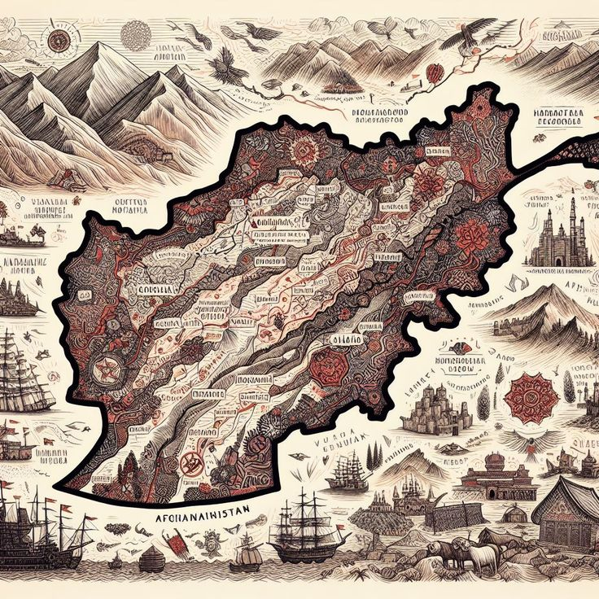

Afghan proverbs reflect centuries of cultural wisdom passed through generations. They are simple, poetic, and full of meaning.



Discover the wisdom of Afghan culture through proverbs
Afghan proverbs reflect centuries of cultural wisdom passed through generations. They are simple, poetic, and full of meaning.
آنان که غنیترند، محتاجترند.
The richer they are,the needier they become.
ریگ به کفش داشتن.
To have a pebble in one's shoe.